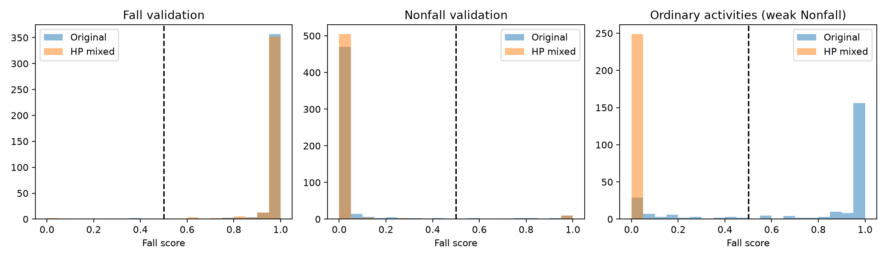

# HP 混合数据 ResNet18 验证比较 新模型最佳轮次：18。重新加载误差：0。 原模型与新模型均独立推理，未使用 B 门控；没有评价测试集或修改线上模型。 ## 相同阈值 0.5 |模型|Fall检出/总数|漏检|Nonfall误报/总数|Fall Precision|Fall Recall|Fall F1|普通活动触发/总数| |---|---|---|---|---|---|---|---| |original|384/390|6|27/536|0.9343|0.9846|0.9588|192/250| |mixed_HP|384/390|6|16/536|0.9600|0.9846|0.9722|0/250| ## 五类活动（阈值 0.5） |活动|原模型触发|新模型触发|样本数| |---|---|---|---| |jumping|40|0|50| |running|43|0|50| |seated-breathing|33|0|50| |walking|43|0|50| |wavinghand|33|0|50|  ## 结论边界 - 新训练集没有纳入官方验证 ID、与保留验证集内容相同的训练记录或先前 25 条诊断样本的相同内容。 - 验证集用于早停选模型；这些指标不能当作独立测试表现。 - HAR 的普通活动标签是分段级弱 Nonfall 标注，未提供逐帧跌倒缺席标注；这里不能估计每小时误报。 - 原模型使用 HP+ESP32，新模型使用 HP 混合来源且加类别权重；此比较不能单独证明改善只由新增活动数据造成。 - 两来源的环境与任务有关联；仍需新的独立录制检验泛化。 - 原训练数据存在一条与验证内容相同的记录；comparison.json 额外提供排除此记录后的共同验证子集指标。 完整固定阈值、逐样本结果与哈希见 comparison.json 和 validation_predictions.csv。
